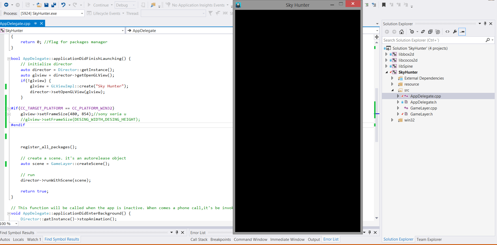

Capítulo 3 - Introducción
En este capítulo comenzaremos el desarrollo del juego SkyHunter, aprenderemos a configurar la pantalla y a usar Sprites. En cada apartado se proveerá un link de descarga de las clases y recursos usados, se recomienda al final de cada capítulo descargar y colocar esas clases en la carpeta Classes de tu proyecto para compilar sin problemas.
3.1 Configuración de pantalla
Tras crear el proyecto, lo primero que haremos será borrar el contenido de nuestra clase HelloWorld.cpp y HelloWorld.h hasta dejarlos como veremos a continuación y posteriormente renombrarlos como GameLayer.cpp y GameLayer.h respectivamente.
GameLayer.h
GameLayer.cpp
Una vez hecho esto, configuraremos la pantalla del juego.
Como será un juego para móvil en orientación portrait (vertical), le diremos a cocos que nos muestre una pantalla de ese formato. En mi caso como tengo un Sony Xperia U, le diré a cocos que quiero una ventana de 480x854 glview->setFrameSize(480, 854) con esta directiva en AppDelegate.cpp. Si quisiéramos un juego con esta misma resolución en landscape (como si girásemos el móvil) basta con indicar 854x480. Si ejecutamos esto es lo que deberíamos de ver:

Como vemos añado una comparación antes de cambiar el tamaño de la pantalla CC_TARGET_PLATFORM == CC_PLATFORM_WIN32 para que el tamaño de pantalla que muestre cocos sea alterado solo si estamos desarrollando en win32 en este caso. Una vez lanzado en el móvil, este cambio no será efectivo.
La última modificación que haremos en esta clase será para decirle a cocos la resolución para la cual fue diseñado nuestro juego y de esta forma el framework automáticamente escalará las imágenes para adaptarlas a la pantalla sobre la que el juego se ejecuta.
El juego está diseñado para una resolución de 320x480 y así se lo indicamos a cocos glview->setDesignResolutionSize(DESING_WIDTH, DESING_HEIGHT, ResolutionPolicy::EXACT_FIT) con ResolutionPolicy::EXACT_FIT le decimos que escale las imágenes para ocupar el total de la pantalla teniendo en cuenta la resolución para la que están diseñadas.
Tras todo esto nuestra clase AppDelagate debe de quedar así:
AppDelegate.h
AppDelegate.cpp
Si has llegado hasta aquí, ya tienes tu aplicación configurada para comenzar a desarrollar. A partir de aquí, trabajaremos con Sprites y otros componentes, principalmente en nuestra clase GameLayer.cpp. Puedes descargar el código de la aplicación hasta el momento aquí y los recursos para el siguiente apartado aquí.
3.2 Usando Sprites
Lo primero que debemos hacer es copiar las imágenes cuyo link de descarga está arriba, a la carpeta Resources y borrar todo su contenido anterior a excepción de la carpeta fonts.
Recordar que esta carpeta se encuentra en SkyHunter -> Resources al mismo nivel que la carpeta Classes.

Ahora que ya tenemos las imagenes incluidas en nuestro proyecto, las podemos utilizar. Para ello usaremos la clase cocos2d::Sprite y crearemos a modo de ejemplo el fondo de nuestro juego con Sprite::create("nombre-imagen").

Para posicionar el fondo de nuestro juego usamos fondo->setPosition(visibleSize.width / 2, visibleSize.height / 2) porque como vimos en el capítulo 2 por defecto los sprites tienen su anchor point en el centro entonces como queremos que ocupe toda la pantalla, lo colocamos en el centro de la misma. Cocos automáticamente escalará el sprite gracias a la configuración que pusimos en nuestro AppDelegate.cpp.
Ahora que ya sabemos como funciona la clase Sprite, crearemos las clases para nuestro juego que heredaran de cocos2d::Sprite y de cocos2d::Node. Para comenzar, crearemos una clase Background que se mueva. Para tener sensación de desplazamiento en nuestro juego.
Background.h
Background.cpp
Esta clase hereda de Node para poder ser añadida a la escena de cocos, básicamente es un nodo al que se le añaden dos hijos que son dos Sprite simples.
Uno es añadido por encima de la altura de la pantalla por lo que no será visible y otro justo dentro de la pantalla por lo que sí será visible.
En su update se mueven ambos sprites hacia abajo para dar una sensación de movimiento. Una vez que el Sprite que en principio no era visible está situado justo en el centro de la pantalla, se reposiciona a su posición original, de la misma forma el Sprite que al principio estaba situado en el centro de la pantalla es reseteado a su posición inicial cuando ya no es visible al salirse por debajo de la pantalla.
Mejor veámoslo ilustrado.
También usamos dos macros CC_SYNTHESIZE ya nombrada en el capítulo anterior, que nos permite generar rápidamente getters y setters y el segundo macro CREATE_FUNC que genera automáticamente el método estático create() para esta clase.
Excelente, ahora sólo falta decirle a nuestro juego que añada el nuevo background en lugar del que teníamos inicialmente y hacer que este background se mueva.
GameLayer.h
GameLayer.cpp
Como podemos ver, hemos creado un método update y le decimos al framework que incluya en el ciclo del juego ese método update mediante this->schedule(schedule_selector(GameLayer::update)) (no es necesario que el método se llame update pero sí que reciba un float como parámetro y sea void), schedule_selector es uno de esos macros especiales que cocos2d-x incluye para facilitar el desarrollo de nuestro juego. En el update recibiremos como parámetro la cantidad de tiempo que transcurrió desde la última vez que se ejecutó. Para garantizar que el juego trabaja siempre a la misma velocidad, multiplicaremos la velocidad a la que se mueven todos los elementos por dt tal y como hicimos en el método update de la clase Background que es llamado desde aquí al igual que todos los métodos update de los diferentes componentes que iremos creando.
Puedes descargar las carpetas Classes y Resources del proyecto hasta el momento aquí.